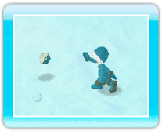
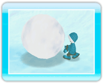
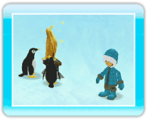
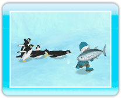

14 |
Using Items |
 |
To use an item, point at the item icon in the lower-left corner of the screen and press *Put away items by pressing Fish Sticks 
The fish sticks will tell you where Chowfish are hiding under the ice and snow. If you move while holding the fish sticks, they will open when you find a good spot to fish. ・Fishing for Chowfish 
When the fish sticks open, press Blowfish This is a little round fish that becomes a snowball when you toss it by pressing 
・Rolling a Snowball When you toss a blowfish, it will roll up into a snowball. If you get next to the snowball and hold *Snowballs will be destroyed when they hit an obstacle. *You can have up to three snowballs rolled up at the same time. Golden Penguin This is a golden penguin statue. After selecting it with the pointer, press *To remove a golden penguin, stand next to it and press Tuna Tuna is a treat for the penguins. When they see one, they will rush toward it and eat it up! |
 |
 |
 |